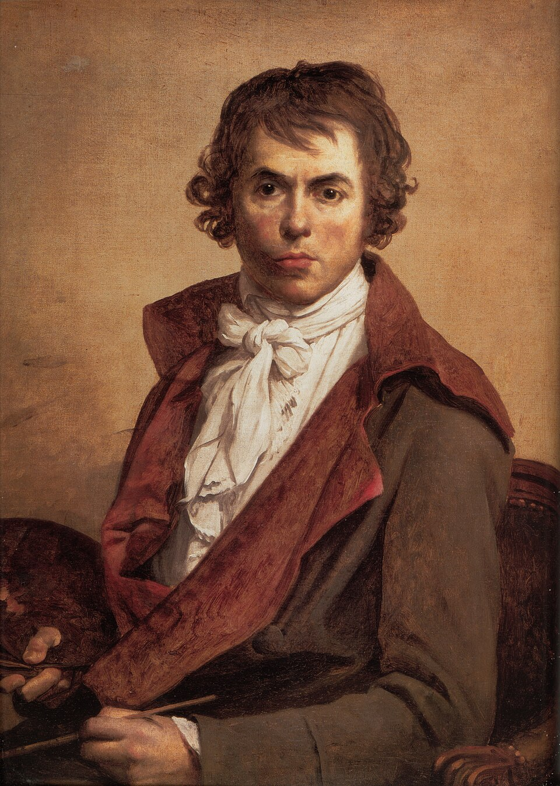

Pintor francés
Jacques-Louis David
1748–1825
Pintor de la Revolución y luego de Napoleón, fue diputado, votó la muerte del rey y organizó las fiestas cívicas del nuevo régimen. Con la Restauración se exilió a Bruselas, donde murió sin volver a Francia. Su neoclasicismo de contornos duros y gesto contenido fue durante treinta años el estilo oficial de un país en revolución permanente.